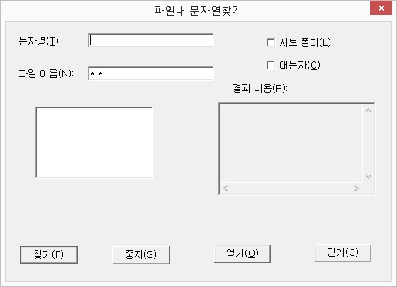

프로그램이나 파일 이름을 직접 입력하여 실행합니다. 윈도우즈의 실행 기능과 동일합니다.
이 기능에서 지원하는 열기 형태는, 실행을 원하는 프로그램 이름을 직접 입력하여 실행하거나, 문서나 파일 이름을 입력하여 해당 파일과 연결된 프로그램을 실행하면서 문서를 열 수도 있으며, 폴더 경로를 입력하여 탐색기로 해당 폴더를 직접 열 수도 있습니다. 또한
'http://...'과 같이 URL을 입력하여 인터넷 익스플로러로 해당 홈페이지를 직접 열 수도 있습니다.
프로그램이나 파일 이름을 입력할 때에는 기본적으로 전체 경로를 모두 입력해야 하지만 해당 파일이 현재 위치에 존재하는 경우나 패스가 걸린 폴더에 위치한 경우에는 이름만 입력해도 무방합니다.
윈도우즈 탐색기는 프로그램과 연결된 데이터 파일 정보를 가지고 있는데 이를 연결 프로그램이라 합니다.
예를 들어, 탐색기에서 *.txt 파일에 위치한 다음 마우스 더블 클릭이나 <Enter>키를 누르면 메모장이 실행되면서 해당 파일이 열립니다.
*.mp3 파일은 기본 적으로 윈도우즈 미디어 플레이어 프로그램과 연결되어 있습니다.
사용자들은 연결 프로그램 설정에서 데이터 파일과 연결된 프로그램을 지정함으로 자신이 원하는 프로그램을 실행할 수 있습니다.
센스 독서기에서는 이러한 윈도우즈 탐색기의 연결 프로그램 설정을 직접 설정할 수 있습니다. 원하는 데이터 파일에 위치한 후 연결
프로그램 기능키<Ctrl-P>를 실행하면 윈도우즈의 '연결 프로그램 설정' 대화상자가 나타나며 이 곳에서 원하는 프로그램을 지정해 주면 됩니다. 이 대화상자의 자세한 사용법은 윈도우즈의 도움말을 참고하시기 바랍니다.
* 센스 독서기의 탐색창에서 윈도우즈 탐색기의 연결 프로그램을 직접 실행하고자 할 경우에는 원하는 데이터 파일에 위치한 다음
<Ctrl-Enter>키를 누릅니다.
현재 위치에 새로운 폴더를 만듭니다.
기능키를 누르면 폴더 이름을 입력하는 편집창이 출력됩니다. 이곳에 원하는 폴더 이름을 입력한 뒤 <Enter>키를 누르면 새로운 폴더가 만들어집니다.
* '폴더 이름' 편집창에 전체 경로를 입력하면 현재 폴더가 아닌 다른 곳에 이동하지 않고서도 폴더를 만들 수 있습니다.
예: 'd:\xvtest', 'e:\temp'
현재 폴더 내에서 특정 문자열이 들어 있는 파일을 찾습니다.
기능키를 누르거나 [파일] -> [파일 내 문자열 찾기] 메뉴 항목을 실행하면 '파일 내 문자열 찾기' 대화상자가 출력되며, 각 항목의 구성은 다음과 같습니다.

1. 파일이름 편집창
검색을 원하는 대상 파일을 지정합니다. 와일드카드(*, ?)문자를 사용할 수 있으며 기본값은 *.*(모든파일)입니다.
2. 문자열 편집창
찾고자하는 문자열을 입력합니다.
3. 서브 폴더 체크박스
현재 폴더의 하위 폴더까지 검색할 것인지 여부를 선택합니다.
4. 대소문자 체크상자
대소문자를 구별하여 검색할것인지 여부를 선택합니다.
5. 목록상자
검색된 파일의 이름과 검색 문자열의 일부를 보여줍니다.
6. 결과내용 편집창
목록에서 선택한 파일의 경로 및 파일 내에서 검색 문자열이 발견된 행의 내용을 표시합니다.
7. 찾기 버튼
검색을 시작합니다. 디폴트 버튼임으로 '검색 문자열' 편집창에서 문자열 입력 후 <Enter>키를 누르면 '찾기' 버튼이 눌립니다.
8. 중지 버튼
찾기 동작을 멈춥니다.
9. 열기 버튼
목록에서 선택한 파일을 독서기로 열어줍니다.
10. 닫기 버튼
대화상자를 종료하고 탐색창으로 돌아갑니다. <Esc>키를 눌러도 됩니다.
문서 파일이나 동영상 파일을 독서창으로 열지 않고 탐색창에서 직접 사용자가 원하는 파일 형식으로 변환하는 기능입니다.
변환을 원하는 파일에 위치한 후, [파일] -> [변환] 메뉴를 실행하면 각 파일 형식을 지정하는 하위 메뉴가 나타납니다. 사용자가 원하는 메뉴에서 <Enter> 키를 누르면 변환 작업이 시작되며, 변환이 끝난 후에는 다시 탐색창으로 돌아오게 됩니다.
1. 문서 파일의 형식 변환
DOC, HWP, HTM, xls, ppt 등의 문서 파일 형식을 손쉽게 완성형이나 조합형, 유니코드 등의 문서로 변환할 수 있습니다.
완성형, 조합형, 유니코드 변환작업 이후 생성된 파일은 *.txt 확장자가 자동으로 붙여집니다. 만약, 원본 파일의 확장자가 이미 *.txt인
경우, 확장자를 포함한 전체 파일명 뒤에 *.txt를 추가합니다. (예: 원본 파일명이 '영웅문.txt'라면 작업 후 생성파일은 '영웅문.txt.txt'가 됩니다.)
* 여러 개의 파일을 동시에 작업하려면 원하는 파일을 <Space> 키를 눌러 선택한 후, 변환 작업을 실행합니다.
2. 문서 파일의 점자 파일 변환
문서 파일(DOC, HWP, HTM, xls, ppt)을 BRF 형식의 점자 파일로 변환합니다.
점자 변환시 세부 옵션의 지정은 [설정] -> [점자 번역 옵션] 메뉴를 실행하여 설정할 수 있으며, 점자 문서의 역점역 기능은 지원하지
않습니다.
3. 오디오 파일 변환
문서 파일이나 동영상 파일을 오디오 파일로 변환합니다.
변환될 오디오 파일의 형식은 [설정] -> [오디오 변환] 메뉴를 실행하여, 파일 포멧과 문서 기준을 지정할 수 있습니다. 동영상 파일의 경우, 자막 파일을 포함하여 오디오 파일로 출력 가능합니다.
4. 오디오 CD 변환
오디오 CD의 음악을 트랙별로 MP3이나 WAV 파일로 변환해 줍니다.
오디오 CD를 CD-ROM에 삽입한 다음, 해당 드라이브로 이동하면 각각의 트랙이 'Track01.cda', 'Track02.cda' 등과 같은
형식으로 표시됩니다.
변환을 원하는 트랙에 위치한 후, [변환] -> [오디오 파일로 변환] 메뉴를 실행하면 독서기 폴더 내의 'audiocd'라는 폴더에 지정한
형식으로 파일이 생성됩니다.
* 변환될 파일의 형식은 [설정] -> [오디오 파일 변환] -> [파일 포멧] 메뉴를 실행하여 변환 기능 실행 이전에 설정하도록 합니다.
* 파일이 생성될 위치는 [설정] -> [변환 폴더] -> [오디오 CD 변환 폴더 설정] 메뉴를 실행하여 사용자가 원하는 폴더로 변경할 수도 있습니다.
마이크나 컴퓨터에서 들리는 소리를 간편하게 MP3나 WAV 파일로 녹음할 수 있습니다.
녹음될 채널의 선택은 '볼륨 조절'에서 사용자가 직접 선택해야 하며, 파일 포멧의 지정은 [설정] 메뉴의 [오디오 변환]에서 지정한 설정이 그대로 적용됩니다.
센스 독서기의 탐색창을 실행한 이후 녹음 단축키를 누르면 PC 스피커에서 음의 끝부분이 약간 올라가는 시그널과 함께 녹음이 시작되며,
동일한 기능키를 다시 누르면 녹음이 정지됩니다.
녹음 중간에는 <Ctrl-Alt-Shift-F11> 키를 눌러 녹음을 일시정지할 수 있고, 같은 키를 다시 누르면 녹음이 재개됩니다. 녹음 및
녹음 중지, 일시정지 등의 메뉴는 현재의 상태에 따라 활성화와 비활성화가 변경됩니다.
* 녹음된 파일의 위치는 기본적으로 센스 독서기 폴더 내의 record 라는 폴더입니다. 파일 위치를 사용자가 변경하고 싶다면 [설정]
-> [변환 폴더] -> [녹음 폴더 설정] 메뉴를 실행하여 위치를 변경할 수 있습니다.
일반적인 프로그램과 마찬가지로 <Alt-F4>키를 눌러 독서기를 종료할 수 있습니다.
만약 [설정] 메뉴의 [Esc 키로 종료] 메뉴 항목이 선택되어 있다면 <Esc>키를 눌러도 탐색창이 종료됩니다.
센스 독서기는 탐색창을 종료할 당시 폴더 위치를 기억하고 있습니다. 그래서 다음에 다시 탐색창이 열릴 때 마지막 종료했던 폴더로 바로 이동 후 그 폴더 내용을 보여주게 됩니다.
* 탐색창의 종료와 독서창의 종료는 별개입니다. 만일 독서창이 열려 있는 상태에서 탐색창을 닫았다면 독서창은 여전히 열려 있습니다. 독서창을 닫기 위해서는 독서창의 종료 방법을 사용해야 합니다.